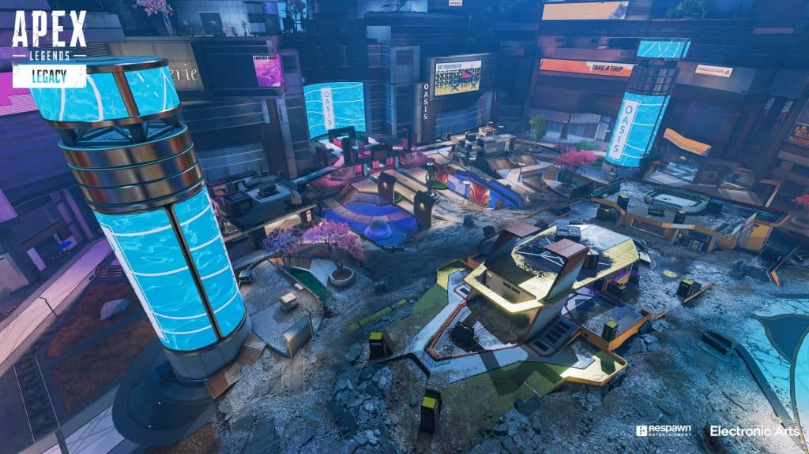

En esta nueva temporada llegan muchísimas cosas nuevas, una nueva temporada, se presentó una nueva leyenda, se implementaron muchos balances para lograr que en esta nueva actualización, se disfrutara más y no se tuvieran que hacer tantas modificaciones en el próximo split.
En esta temporada, como al igual que la anterior, contamos con na nueva arma: El Bocek. Un arco realmente avanzado que permite integrar consigo una buena variedad de modificaciones, que van desde mejoras en daño por flecha, modos de disparo y ampliación de la mira. Por suerte, en este primer split, contamos con la ventaja de que aleatoriamente aparecerá un bocek legendario en las cajas de botín, aunque también se puede encontrar en los contenedores de recursos cotidianos pero en su categoría básica.
¿Cansado de las Third Partys?, ¿De perder puntos en ranks?, ¿De encontrarte con cuentas smurf de los predators de papel? Esta nueva temporada trae consigo un nuevo modo: Arenas. Como si se tratara de CSGO con poderes, como el ya conocido Call Of Duty, papá EA ha decidido integrar un nuevo modo para entretenernos. Con una modalidad de 3vs3, puedes elegir a la leyenda que desees, aunque no todas rinden bien aquí, y enfrentarte a tus enemigos, cada kill, asistencia o derribo te otorgarán puntos, los cuales puedes usar para comprar y mejorar tus armas, utilidades y comprar accesorios.

Y desde los cielos llega Valkyrie, la nueva leyenda que se integra a los juegos Apex. Llegó para dominar los cielos con sus increíbles habilidades. La leyenda cuenta con una pasiva: Reconocimiento, estando en el aire es capaz de identificar enemigos y marcarlos en el mapa. Como habilidad táctica, cuenta con un paquete de misiles que al impactar en el suelo, impacta en el enemigo y los aturde durante unos segundos, estos ocasionan poco daño pero son realmente útiles. Y por último, su habilidad definitiva, la cual te ayuda a ti y a tus compañeros a despegar hacia el cielo para poder reposicionarse.